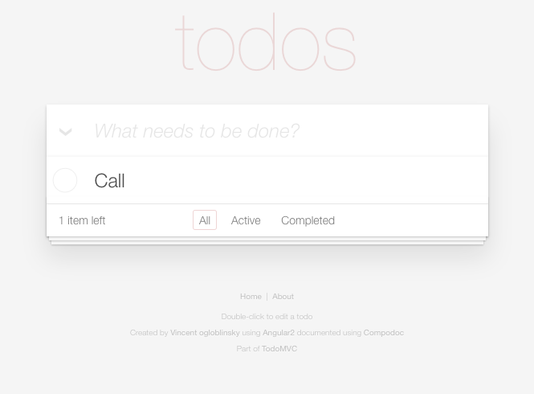
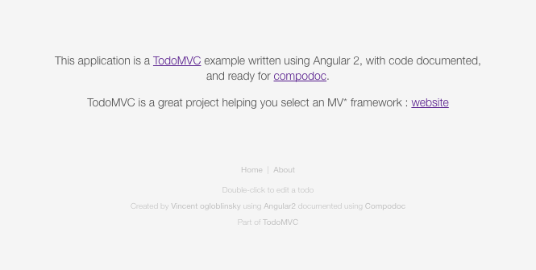

This project was generated with angular-cli.
It is a demo project for demonstrating Compodoc features :
Run ng serve for a dev server. Navigate to http://localhost:4200/. The app will automatically reload if you change any of the source files.
Run ng generate component component-name to generate a new component. You can also use ng generate directive/pipe/service/class/module.
Run ng build to build the project. The build artifacts will be stored in the dist/ directory. Use the -prod flag for a production build.
To get more help on the angular-cli use ng --help or go check out the Angular-CLI README.
function hello() {
console.log('hello world !');
}| Home page | About page |
|---|---|
|  |  |